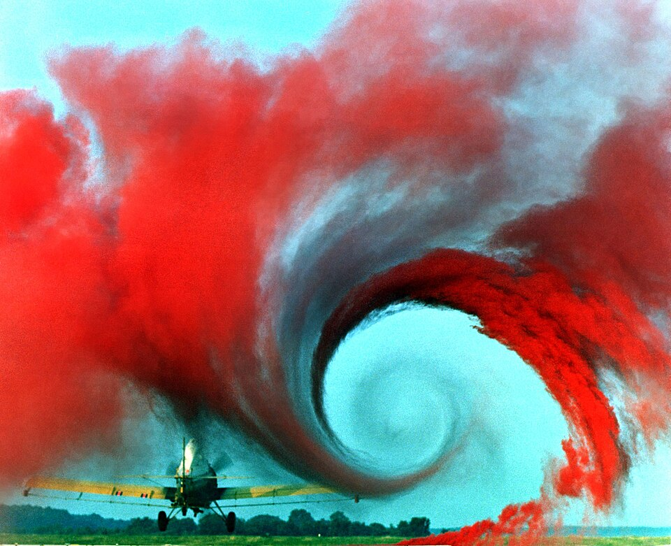

Los remolinos que deja cada ala y cómo las aves los aprovechan
Un día húmedo, en el aeropuerto, a veces se ven dos hilos de vapor que salen de las puntas de las alas de un avión que aterriza. Son la huella de dos remolinos que todo avión deja detrás: los vórtices de punta de ala. Cuestan energía, porque generan una resistencia extra. Y algunas aves que vuelan en formación parecen haber aprendido a aprovecharlos.
Según la guía de aeronáutica de la NASA, en un ala que sustenta la presión es más baja arriba que abajo [1]. En el medio del ala, las dos zonas están separadas, pero cerca de las puntas el aire puede pasar de abajo, donde la presión es alta, a arriba, donde es baja [1]. Ese aire que rodea la punta forma, mientras el avión avanza, un par de remolinos que giran en sentidos opuestos, uno en cada punta [1]. Con mucha humedad, la NASA dice que a veces se los puede ver como estelas largas y finas que salen de las puntas de las alas de un avión que aterriza [1].

Esos remolinos tienen un costo. Detrás del ala producen un flujo que gira, muy fuerte cerca de las puntas y más débil hacia el centro [1]. Ese flujo inclina el aire que llega al ala, y le reduce el ángulo de ataque efectivo [1]. El resultado es una componente extra de la fuerza aerodinámica que apunta hacia atrás: la resistencia inducida, también llamada «resistencia debida a la sustentación», porque solo aparece en alas que sustentan, y es mayor cuanto mayor es la sustentación [1]. La NASA da su fórmula [1]:
La fórmula dice cómo reducirla: con alas largas y angostas, de alargamiento grande [1]. Por eso los planeadores tienen alas tan largas (un razonamiento a partir de la fórmula). La NASA agrega que la distribución ideal de sustentación es elíptica, con e = 1; un ala rectangular tiene e de alrededor de 0,7 [1]. El caza británico Spitfire, de la Segunda Guerra Mundial, debía parte de su rendimiento a su ala elíptica [1].
El colchón inflable que pierde: pensá el ala como un colchón con aire a presión abajo y menos presión arriba. Por los bordes, el aire se escapa de abajo hacia arriba y se enrosca. Cuanto más largo es el colchón comparado con su ancho, menos importan los bordes. Un ala larga y angosta «pierde» menos por las puntas.
Durante años, los diseñadores intentaron reducir la resistencia inducida dándole formas especiales a las puntas del ala [1]. Los hermanos Wright usaron bordes de fuga curvos en sus alas rectangulares, según resultados de túnel de viento [1]. En los aviones de pasajeros modernos, las puntas se doblan hacia arriba formando winglets, que Richard Whitcomb, del Centro de Investigación Langley de la NASA, estudió extensamente para reducir esta resistencia [1].
Por cómo giran los vórtices de punta, detrás de un ala el aire baja en el centro y sube por afuera de las puntas (un razonamiento a partir del sentido de giro). Un ave que vuela un poco detrás y al costado de otra puede aprovechar ese aire que sube. Según un trabajo de Victor Colognesi y sus colegas de la Universidad Católica de Lovaina, presentado en 2024, desde hace mucho se sospecha que las grandes aves migratorias, como los gansos o los ibis, ahorran energía al volar en formación en V, aprovechando la corriente ascendente que deja la que va adelante [2].
Con las aves hay una complicación: como aletean, su estela no es un par simple de remolinos sino un flujo que oscila y se deforma rápido [2]. En 2014, S. J. Portugal y sus colegas publicaron en Nature un estudio con ibis en vuelo en formación, con un título que resume el hallazgo: las aves aprovechan el aire ascendente y evitan el descendente sincronizando sus aleteos [3]. Las simulaciones de Colognesi muestran algo coherente: para ahorrar energía, el ave de atrás tiene que aletear con un desfase justo, de modo que la punta de sus alas siga los vórtices de punta de la que va adelante [2].
Aviones en formación: Colognesi y sus colegas señalan que los avances en el control del tránsito aéreo podrían hacer realidad, en un futuro cercano, que aviones comerciales vuelen en formación en los cruces oceánicos para aprovechar este efecto [2]. Para un avión, que no aletea, la estela es más simple: un par de vórtices que gira en sentidos opuestos y puede durar mucho [2].
Los vórtices de punta de ala son el precio de sustentar con un ala de largo finito: el aire se escapa por las puntas, se enrosca y produce resistencia inducida. Las alas largas, las formas elípticas y los winglets la reducen. Y lo que para un avión es una pérdida, para un ave que vuela en formación puede ser una ayuda, si aletea en el momento justo.
Pregunta para la comunidad: Según la fórmula de la NASA, la resistencia inducida crece con el cuadrado del coeficiente de sustentación. ¿En qué momento del vuelo esperás que sea mayor: en crucero, a gran velocidad, o al despegar y aterrizar, cuando el avión va lento? Pista: a menor velocidad, el ala necesita más CL para sostener el mismo peso.